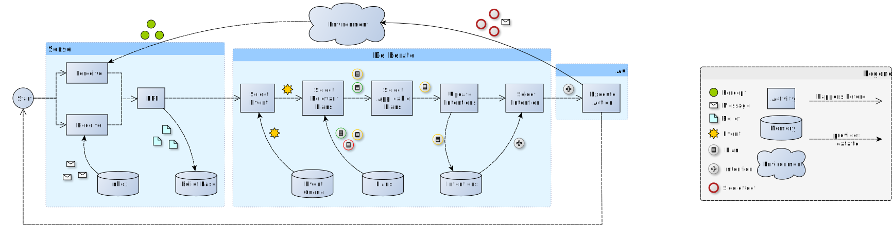
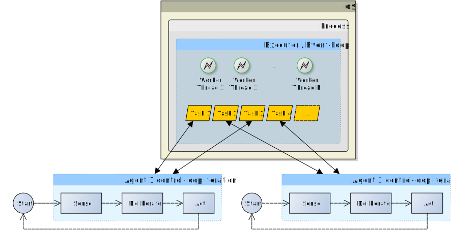
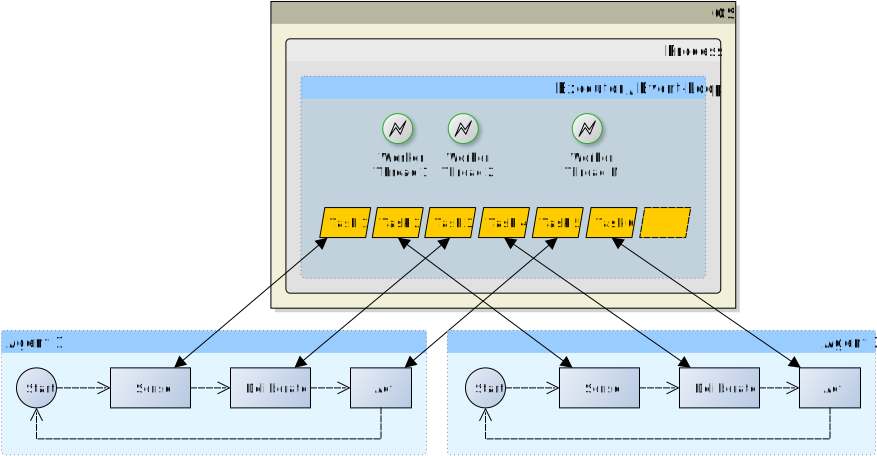

Martina Baiardi, Samuele Burattini, Giovanni Ciatto
Danilo Pianini, Alessandro Ricci, and Andrea Omicini
Department of Computer Science and Engineering (DISI)
Alma Mater Studiorum — Università di Bologna
Via dell’Università 50, 47522 Cesena (FC), Italy
most famous semantics: AgentSpeak(L)
most famous architecture (see picture)
several implementations
Insight: the same architecture may be implemented in so many ways
(e.g., w.r.t. concurrency)
Agents lifecycle, in general, is a control-loop
BDI agents are more complex

We distinguish between internal and external concurrency
Internal concurrency $\approx$ how agents schedule intentions internally
External concurrency $\approx$ how agents’ control-loops are scheduled by the underlying platform
Allows for various level of granularity:


Different properties w.r.t. fixed or variable amount of worker threads ($N$)
All-Agents-One-Event-Loop (AA1EL) $\equiv$ AA1E with just one thread
We inspected external concurrency in three steps:
We selected actively-maintained and open source BDI programming frameworks:
!ping.
+!ping <-
.revealCurrentThread("intention 1");
.send(pong, tell, ball);
!!showThread(2); /* Generates intention 2 */
.revealCurrentThread("intention 1").
+ball <-
!!showThread(4); /* Generates intention 4 */
.revealCurrentThread("intention 3").
+!showThread(X) <- .revealCurrentThread("intention " + X).
+ball[source(X)] <-
.revealCurrentThread("intention 5");
.send(X, tell, ball);
!!showThread(6); /* Generates intention 6 */
.revealCurrentThread("intention 5").
+!showThread(X) <- .revealCurrentThread("intention " + X).
| Model ⇒ Tech. ⇓ |
1A1T | AA1T | AA1EL | AA1E fixed |
AA1E variable |
1A1P |
|---|---|---|---|---|---|---|
| Astra | ||||||
| Goal | ||||||
| Jadex | ||||||
| JaKtA | ||||||
| Jason | ||||||
| Phidias | ||||||
| Spade-BDI |
Takeaway 1: better for a BDI framework to support multiple concurrency patterns
Takeaway 2: even better for a BDI framework to support concurrency patterns customisability on the user-side
It is necessary to separate BDI architecture from its actual execution